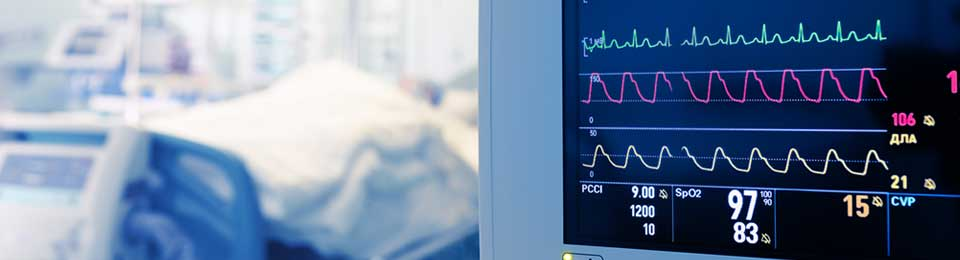

The angel Heart Institutes are regarded as one of the best heart hospitals in India, performing a multitude of treatments and procedures in cardiology and cardiothoracic surgery. The scorecard shows an unmatched record of over 1,52,000 cardiac and cardiothoracic surgeries.

The Centres have dedicated Cardiothoracic CCUs with 1:1 nursing ratio, round the clock. They are well equipped with bedside color doppler, echocardiography system, continuous oxygen supply, infusion pumps, defibrillator, ventilators, invasive as well as non-invasive pressure monitoring systems, temporary pace maker (transdermal as well as transvenous), intra aortic balloon pump, ABG (Blood Gas machine) and electrolytes analysis machines.
Electrophysiological studies have been used for decades to evaluate cardiac arrhythmias and to get a basic understanding of their mechanisms. Venticular tachyarrhythmias are the commonest cause of sudden cardiac death (SCD). The patients are investigated by an EP study and, if required, provided with implantable cardioverter defibrillator (ICD) as a life saving device. We have capabilities for multi-site pacing for patients of Heart Failure and Dilated cardiomyopathy. Recently a bilateral pacing was performed for intermittent Atrial Fibrillation.
The Non-invasive Cardiac Laboratory is run by senior cardiologists who are dedicated to the work in the field. The procedures done here include stress echoes, dobutamine stress echoes, vascular dopplers, trans-oesophageal echoes, intra-operative TEE and fetal echoes.